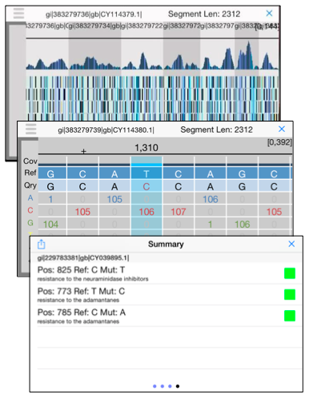

<table class="intro">
<tr> <td width="500" valign="top">

<span class="contentheadbig">iGenomics</span><br>
<a href="http://schatzlab.cshl.edu/people/apalatnick/">Aspyn Palatnick</a>, 
<a href="http://biology.as.nyu.edu/object/ElodieGhedin.html">Elodie Ghedin</a> &amp;
<a href="http://schatzlab.cshl.edu">Michael Schatz</a> <br>
    
<hr>

iGenomics was developed by Aspyn Palatnick and Michael Schatz. It follows the state of the algorithms developed in genomics,
and is based off these critical papers:

<br> <br>

<table class="intro" width=100%>

<tr> 
  <td valign=top width=10>&raquo;</td>
  <td valign=top><a href="http://www.nature.com/nmeth/journal/v9/n4/full/nmeth.1923.html">Fast gapped-read alignment with Bowtie 2</a> <br> Langmead B and Salzberg S. (2012) Nature Methods. 9, 357–359 (2012) doi:10.1038/nmeth.1923 </td>
</tr> <tr><td height=8 colspan=2></td></tr>

<tr> 
  <td valign=top width=10>&raquo;</td>
  <td valign=top><a href="http://bioinformatics.oxfordjournals.org/content/25/16/2078">The Sequence Alignment/Map format and SAMtools.</a> <br> Li, H et al. (2009) Bioinformatics. 25 (16): 2078-2079. doi: 10.1093/bioinformatics/btp352</td>
</tr> <tr><td height=8 colspan=2></td></tr>

<tr> 
  <td valign=top width=10>&raquo;</td>
  <td valign=top><a href="http://www.nature.com/nbt/journal/v29/n1/abs/nbt.1754.html">Integrative genomics viewer</a> <br> Robinson, JT et al. (2011) Nature Biotechnology. 29, 24–26 (2011) doi:10.1038/nbt.1754 </td>
</tr> <tr><td height=8 colspan=2></td></tr>

</table>


<br><br><br>

<span class="contenthead">Links</span><hr>

<table class="intro" width=100%>
  <tr> <td valign=top width=10>&raquo;</td> <td valign=top><a href="/iGenomics/">Return to main page</a></td></tr>
  <tr> <td valign=top width=10>&raquo;</td> <td valign=top><a href="/iGenomics/tutorial/">Tutorial</a></td></tr>
  <tr> <td valign=top width=10>&raquo;</td> <td valign=top><a href="/iGenomics/analysis/">Analysis</a></td> </tr>
  <tr> <td valign=top width=10>&raquo;</td> <td valign=top><a href="/iGenomics/publications.shtml">Publications</a></td> </tr>
</tr> <tr><td height=8 colspan=2></td></tr>

</table>

</td>

<td width="274" valign="top" align=center>
<br>

 

<br><br>

<table class="intro"> <tr> <td align="left">
<b>iGenomics</b><br>
Mobile DNA Sequence Analysis<br>
E-mail: mschatz &lt;at&gt; cshl.edu <br>
Twitter: <a href="http://twitter.com/mike_schatz">@mike_schatz</a> <br>
</td> </tr> </table>

</td>
</tr>
</table>

